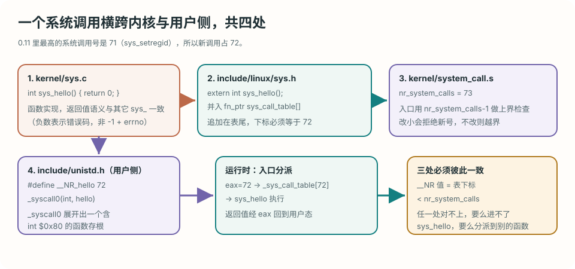
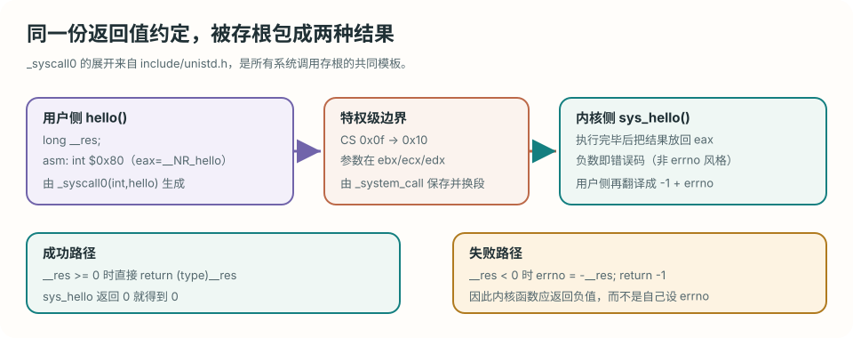

动手写系统调用：从 sys_hello 到 int 0x80
一个系统调用横跨内核与用户两侧，共四处代码必须彼此一致。这一章把它们逐一列出，并说明每一处改动会导致什么——以及哪些结论尚未在真实构建中验证。
实践 · sys_call_table / nr_system_calls加一个系统调用要动哪几处？
在 0.11 里，“系统调用”不是内核单方面的东西：内核提供函数与分派表，用户侧需要知道调用号并生成一条含 int $0x80 的存根。两者靠“同一个编号”对齐。若只改了一边，轻则调用返回错误，重则分派到别的函数。下面按原版源码的位置逐一数清。
内核侧：函数、声明、分派表与上界
先看现状：include/unistd.h 里最高的调用号是 __NR_setregid 71，而 kernel/system_call.s 定义 nr_system_calls = 72，两者的内都是“合法号 ≤ 71”。因此新调用占 72，上界要改成 73。
extern int sys_setregid();
fn_ptr sys_call_table[] = { sys_setup, sys_exit, sys_fork, sys_read,
... , sys_setreuid,sys_setregid };要做的三处内核改动是：在某个内核源文件（例如 kernel/sys.c）里实现 int sys_hello()；在 include/linux/sys.h 里加一行 extern int sys_hello(); 并把它追加到 sys_call_table 末尾（这样它的下标正好是 72）；再把 kernel/system_call.s 的 nr_system_calls 改为 73。_system_call 入口用 nr_system_calls-1 作上界检查，所以最后一步决定“72 号到底能不能进”。

__NR_hello 的值、表下标、上界三者要能推出同一个编号 72。用户侧：__NR 宏与 _syscall0 存根
用户程序不应该自己写 int $0x80，而是用 include/unistd.h 中的宏。先定义新编号，再用 _syscall0 生成一个无参数的存根：
#define __NR_hello 72
_syscall0(int, hello)_syscall0(type,name) 展开出一个名为 hello 的函数：它把 __NR_hello 放进 eax，执行 int $0x80，然后把结果按“非负即成功、负数转 errno”的约定返回。这也意味着内核侧的 sys_hello 应返回正数或 0 表示成功、返回负数表示错误码，而不是自己去设 errno。

-1 加 errno；内核函数本身只需遵循前者。重新编译与验证
改完四处后，重新构建内核（原版 Makefile 产出 Image），再把镜像刷到你的启动盘并启动模拟器，最后用一个只调用 hello() 的小程序验证。下面的命令是动作清单，参数需按你的构建与磁盘准备填写：
# 1. 源码侧改动：sys.c / sys.h / system_call.s / unistd.h
# 2. 重新构建
make
# 3. 确认新号确实进了分派表
nm tools/system | grep sys_hello
# 4. 启动模拟器，运行调用 hello() 的用户程序重要边界：本节属于待验证的操作指南。本次整理未实际重新编译 0.11 内核、未制作启动盘、未在模拟器中运行该用户程序，因此不声称构建成功、不提供任何“预期输出”的截图或日志。若 sys_hello 未出现在链接符号中，首先检查声明与表项下标是否一致；若调用返回错误，再检查 nr_system_calls 是否已加一。
为什么把新函数追加到表尾，而不是插在中间？（展开核对）
因为表下标就是调用号。插在中间会把后面的所有函数都“顶偏”一位，而用户侧头文件里的 __NR_* 并不会跟着变，于是老调用号会分派到错误的函数。追加到末尾则不影响已有编号。
原始资料与下一章
- include/linux/sys.h：fn_ptr 定义与 sys_call_table 全表。
- include/unistd.h：__NR_* 编号与 _syscallN 宏展开。
- kernel/system_call.s：nr_system_calls 上界与 _system_call 入口。
- Makefile：all 目标产出 Image、System.map 与 tools/system 的关系。
亲手加完一个调用，你已经摸到了历史内核的边界。下一章把它放回时间线：从 0.11 到 1.0，虚拟内存、VFS 与网络是怎么一步步长出来的。